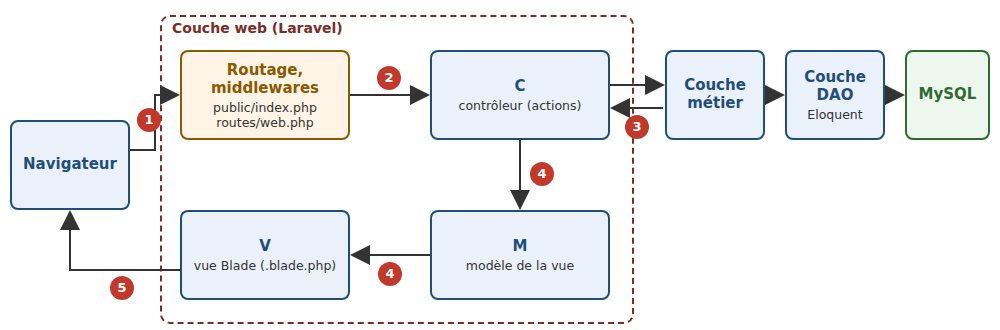
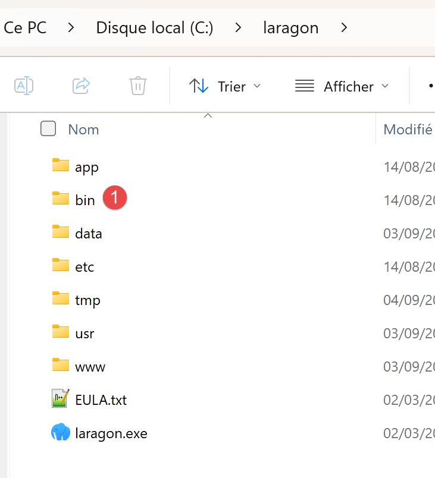
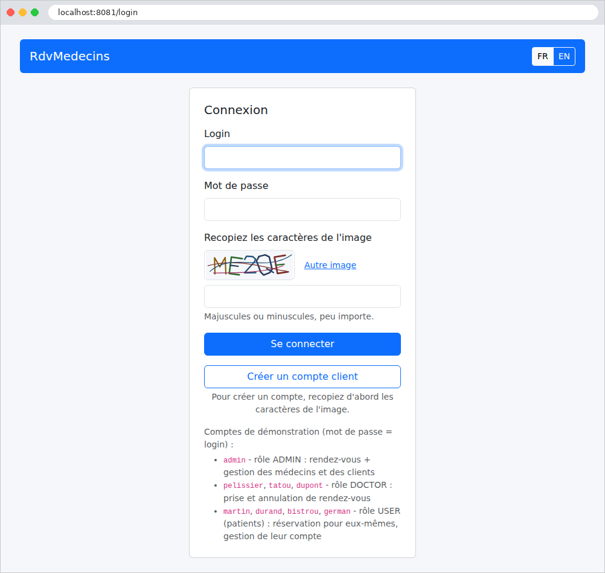

1. Introduction
The document’s PDF is |HERE|.
The document’s codes are |HERE|.
This document is a product of Anthropic’s IA Claude. It follows the document “Step-by-Step Introduction to the [Flask] Web Framework” (2026), which itself followed the documents “Step-by-Step Introduction to the [Spring MVC] Web Framework,” "Step-by-Step Introduction to the [ASP.NET Core MVC] Web Framework," and "Step-by-Step Introduction to the [NestJS] Web Framework" (2026). This document adapts the [Flask] course to the [PHP] environment:
- the [Flask] framework and the [Python] language are replaced by the [Laravel] 13 framework and the [PHP] language (version 8.4 or later);
- the [Jinja2] views are replaced by [Blade] views, the view engine for [Laravel];
- validation by [Pydantic] and [WTForms] is replaced by that of [Laravel]: validation rules and form queries ([FormRequest]);
- The few dozen lines of hand-written security code for [Flask] are replaced by the authentication system for [Laravel] (guards, middleware, [Gate], [Hash] facade, attempt limiter), supplemented by the [firebase/php-jwt] library for JWT tokens;
- ORM and [SQLAlchemy] are replaced by ORM and [Laravel], [Eloquent], still based on [MySQL].
The document closely follows the structure of the [Flask] course: first, numerous small projects, each focused on a specific concept, followed by a comprehensive case study—a web application for scheduling appointments at a medical practice—with all files fully commented. The examples have the same numbers and cover the same topics as in courses [Flask], [Spring MVC], and [ASP.NET Core MVC]: a reader familiar with any of these courses can compare the frameworks example by example. However, this is not necessary: this document stands on its own and assumes no prior knowledge of these frameworks. The only prerequisites are a basic understanding of web programming (the HTTP protocol, the HTML language) and the fundamentals of the [PHP] language (variables, arrays, functions, classes). The course “Introduction to the PHP7 Language Through Examples” (2019) introduces the language itself for those who need to learn it first; the new features of [PHP] 8 used here (promoted properties, [readonly] classes, enumerations, named arguments, the nullsafe operator, etc.) are explained when they first appear.
1.1. Laravel’s Role in a Web Application
A web application is often built in layers, with each layer communicating only with its neighboring layers:

- the web layer receives requests HTTP from the browser and returns pages HTML to it. This is the layer that [Laravel] helps us write;
- the business layer contains the application’s business rules (e.g., “a patient can have only one upcoming appointment”). It knows nothing about the web: it could just as easily serve a command-line application;
- the data access layer (DAO layer, for *Data Access Object*) reads from and writes to the database. We will use [Eloquent], the ORM (*Object Relational Mapper*) of [Laravel], which maps table rows to [PHP] objects.
The web layer itself follows the MVC (*Model-View-Controller*) pattern:
- the controller (C) is a class [PHP] whose methods, called actions, each handle a specific type of request (for example, [GET /agenda]). An action reads the request parameters, processes the request through the business layer, and then selects the view to display;
- the model (M) is the set of data that the action passes to the view;
- the view (V) is a [Blade] file (extension [.blade.php]): a HTML page that contains [{{ ... }}] expressions and [@if], [@foreach]... directives, which the [Blade] engine replaces with data from the template.
A note on terminology, to avoid confusion: in [Laravel], the word “model” (*model*) usually refers to a [Eloquent] model, a class that represents a database table ([app/Models] file). This document uses the word in both senses, specifying which one is meant each time: the view model (the data passed to a view) and the [Eloquent] model (as discussed in the chapter on data access). The word “template” refers to the common view from which other pages inherit (chapter on views).
The processing of a request follows the numbered steps in the diagram:
- 1: The browser sends a request HTTP, for example, [GET /agenda?idMedecin=1&jour=2026-09-26];
- 2: The web server receives the request and passes it to the [Laravel] application via the [public/index.php] file. During development, this server is the one that includes [PHP], launched by the command [php artisan serve]; in production, it will be a server such as [nginx] or [Apache], associated with [PHP-FPM]. The request passes through middleware components—classes that handle all requests (cookies, sessions, security, etc.)—and then [Laravel] compares the requested path to the application’s routes and selects the action responsible for handling that request: this is routing;
- 3: The action requests the data it needs from the business layer; if necessary, the business layer contacts the DAO layer, which queries the [MySQL] database via SQL;
- 4: The action constructs the view’s M model and instructs the [Blade] engine to generate the page (function [view]);
- 5: The page HTML generated by the view is the action’s response, which [Laravel] returns to the browser.
[Laravel] is by far the most widely used web framework in the [PHP] world, ahead of [Symfony] (on whose components it is, incidentally, built). Free and open-source, created in 2011 by Taylor Otwell, it works anywhere that [PHP] ([Windows], [Linux], [macOS]), and [PHP] works with almost all web hosting providers. It is a comprehensive framework: routing, views, validation, sessions, caching, authentication, translation, database access, email sending, background tasks... everything is provided and designed to work together. This is the opposite of the micro-framework [Flask] from the previous lesson, which left it up to the developer to assemble their own components: [Laravel] does a lot on its own, with very little code, and one of the goals of this document is to reveal what happens “behind the scenes .” [Laravel] can create servers that return JSON to a client ([JavaScript], [Angular], [React], [Vue.js], [Flutter]...) as well as traditional web applications, where the server generates the HTML pages and the browser simply displays them. It is this second use case that this document examines.
A specific feature of [PHP] explains a great deal about [Laravel]: the application is rebuilt with each request and then discarded (Example 01). We will return to this point frequently.
1.2. Tools Used
The examples were written and tested using the following tools (installation instructions are provided in the appendix):
- [PHP] 8.4 (any version 8.4 or later is suitable), with the extensions [intl], [mbstring], [openssl], and [pdo_mysql];
- [Composer] 2, the library manager from [PHP];
- the editor [Visual Studio Code], with the extensions [PHP Intelephense] (code analysis) and [Laravel] (views [Blade]);
- a recent browser ([Chrome], [Firefox], [Edge]);
- the command-line tool [curl], which displays the raw HTTP responses (it is included with [Windows] 10 and 11);
- SGBD [MySQL] (or [MariaDB]), for example, that of [Laragon] under [Windows], starting with the chapter on data access, and for the case study. Under [Windows], [Laragon] installs [PHP], [Composer], and [MySQL] all at once.
[Laravel] and the other libraries are not part of [PHP]: [Composer] downloads them from the [Packagist] repository during installation (so you must be connected to the Internet on that day) and places them in a [vendor] folder. Each project describes its libraries in a [composer.json] file. The following table lists the main ones, along with the versions used:
[laravel/framework] | the framework: routing, middleware, controllers, views ([Blade]), validation, session, cache, authentication, translation, [Eloquent]... | 13.33.0 |
[symfony/*] | the [Symfony] components on which [Laravel] is built (HTTP requests and responses, routing, console), installed along with it | 8.1 |
[nesbot/carbon] | dates (e.g., 12), installed with [Laravel] | 3.14.0 |
[brick/math] | exact decimal numbers (example 06), installed with [Laravel] | 1.0.0 |
[firebase/php-jwt] | tokens JWT (section on authentication) | 7.2.0 |
[Laravel] is typically installed by creating a complete project using the command:
[Composer] then downloads the skeleton of a [Laravel] application (about fifty files and folders: configuration, service providers, migrations, tests, [JavaScript] build tools...), then its libraries, and creates an encryption key. This is how you start a real project. For learning purposes, this skeleton has one drawback: it contains many files whose purpose you don’t yet understand. The examples in this document therefore start from the other end: Example 01 is the smallest possible [Laravel] application, and each example adds only the files it needs. The case study at the end has the structure of a standard [Laravel] application.
1.3. Run the case study
1.3.1. Installing Laragon
The case study requires SGBD, MySQL, a PHP interpreter, and the PHP and [composer] package installer. Laragon can provide all of this and more. As of September 2026, Laragon is available at URL and [Download Laragon – Fast & Modern Dev Environment ]. Laragon comes with tools that allow you to install a PHP server and the SGBD and [MySQL]:

- in [1], an Apache web server;
- in [2], the SGBD and [MySQL];
- on [3], a messaging tool that we will not use;
- [4] starts all services (Apache, [MySQL], MailPit);
- [5] displays the web page for URL and [http://localhost]. By default, this URL refers to the <laragon-install>\www folder, where <laragon-install> is the Laragon installation folder;
- in [6], launches the HeidiSQL tool, which allows you to manage MySQL databases. We will use this tool to create the database used by the tax calculation server;
- In [7], open a terminal; all the binaries needed for Laragon are located in PATH;
- In [8], open a Windows Explorer window in the folder associated with URL and [http://localhost];
The Laragon installation folder contains the following items:
 |
- In [1], the [bin] folder contains numerous applications:
 |
- In [1], the Apache web server;
- in [2], a command-line terminal;
- in [3], a [git] client that allows you to manage different versions of a project;
- in [4], a database manager;
- in [5], a mail manager;
- in [6], the SGBD and [MySQL];
- [7], another web server;
- in [8], [node.js] to run JavaScript scripts;
- [9], a text editor;
- [10], the PHP interpreter;
- [11], the [Python] interpreter;
- [12], a cache server;
Laragon comes with a comprehensive development environment. In this course, we will use:
- SGBD, [MySQL], [6], and the [heidisql] tool for graphical management;
- the PHP 8.5 interpreter;
- the [composer] package installer;
The README from the case study indicates that you must enter the following commands in a terminal:
to install the PHP packages required for the examples and the case study.
to run either one of the examples or the case study. If you use a [PowerShell] terminal within VSCode, you will encounter the following problem: Neither [composer] nor [php] are present in the PATH directory on the Windows machine after installing Laragon. Therefore, these commands will not be recognized in a VSCode terminal.
To include [composer] and [php] in the PATH on the Windows machine, open a PowerShell terminal in [administrateur] mode, then type the following commands:
[Environment]::SetEnvironmentVariable("Path",[Environment]::GetEnvironmentVariable("Path", "Machine") + ";C:\laragon\bin\composer","Machine")
[Environment]::SetEnvironmentVariable("Path",[Environment]::GetEnvironmentVariable("Path", "Machine") + ";C:\laragon\bin\php\php-8.5.11-nts-Win32-vs17-x64","Machine")
Adjust the two highlighted paths to match your environment.
You will need to restart VSCode for these changes to take effect.
To create the [MySQL] database required for the case study, proceed as follows:
 |
- In [1], all services must be started;
- in [2], the [Database] option allows you to manage the database;
The [Database] option launches a utility called HeidiSQL:
 |
- In [1], you can select various SGBD options. The default value provided is SGBD MySQL. This is acceptable;
- in [2], you log in to HeidiSQL;
 |  |
- In [1-2], run the SQL file, then select the [dbrdvmedecins2.sql] file, which you’ll find in the [symfony-sept-202-] folder:

Running the [3] file will create the [dbrdvmedecins2] database used by the case study. To view it, run F5 within HeidiSQL to refresh the display:
Editor's note: The following screenshots show a database named [dbrdvmedecins], whereas the database in the case study is named [dbrdvmedecins2]. The two databases are virtually identical, so we determined that it was unnecessary to take new screenshots.
End of note

The database [dbrdvmedecins] has been created. Here is its content:

- in [1-3], the table [clients];
- [id] is the primary key of the table;
- [version] is the row’s version number. This number increments each time the row is modified;
- [titre, nom, prenom] identifies the person;

- in [1-3], the table [medecins];
- [id] is the primary key of the table;
- [version] is the version number of the row;
- [titre, nom, prenom] identifies the person;

- In [1-3], the table of doctors’ appointment time slots:
- [id]: primary key;
- [version]: row version number;
- [id-medecin]: foreign key referencing the doctor’s primary key;
- [hdebut, mdebut]: hour and minutes of the appointment start time. Thus, [8,20] means 8:20 a.m.
- [hfin, mfin]: hour and minutes of the end of the consultation.

- In [1-3], the [rv] table of scheduled appointments;
- [id]: primary key;
- [version]: version number;
- [jour]: appointment date;
- [id_creneau]: foreign key referencing the primary key of the appointment time slot. Since a time slot is linked to a doctor, we know which doctor is handling this appointment;
- [id_client]: foreign key to the number (primary key) of the patient attending the appointment;

- in [1-3], the table [users] lists the users authorized to use the application [NestJS];
- [id, version]: primary key, version number;
- [login, password]: user credentials;
- [nom]: user name;
- [role]: the user’s role. [ADMIN] has full access rights. [USER] has read-only access. This user can view a doctor’s schedule but cannot schedule or cancel an appointment;
1.3.2. Running the Case Study
Reviewer’s note: I advise the reader to run the case study immediately as described below. Once you fully understand the purpose of this appointment scheduling application, ask your favorite IA to modify the application as follows: from now on, each doctor will be able to:
- set their own appointment slots between two dates. This will allow them to adjust their schedule as needed;
- remove certain time slots from the calendar for a given day—for example, if they are unavailable for personal reasons;
The modification is not straightforward because it involves a change to the database structure. Ask IA to provide you with the new application code and the SQL script to create the new database. To do this, you’ll need to provide them with the ZIP file containing the complete project as well as the SQL script for the old database.
Also, I haven’t reviewed the course created by Claude. He had already produced the courses [NestJS], [ASP.NET Core MVC], [Spring MVC], and [Flask], all of which were perfect. I assumed the same was true for this one. If you run into a problem understanding something, the solution is always the same: ask your favorite IA to explain what you don’t understand. Claude, for example, is very good at this. You may need to “upload” the example you don’t understand to him.
End of note.
The case study at the end of this document is a complete application. Readers will likely want to see it in action before delving into the details of the framework: here’s how to run it. It’s located in the [rdvmedecins2-laravel] folder, next to the [exemples] folder:
You must have installed [PHP] (version 8.4 or later), [Composer], [Visual Studio Code], and [MySQL] (see appendices). Then:
- Create the [dbrdvmedecins2] database by running the [rdvmedecins2-laravel/database/dbrdvmedecins2.sql] script. With [Laragon], open the [HeidiSQL] tool (Database button), then run the script via the File / Run SQL menu. At the command line, from the [rdvmedecins2-laravel] folder:
- Open the [rdvmedecins2-laravel] folder in [Visual Studio Code] (File menu / Open Folder), then open a terminal (Terminal menu / New Terminal);
- Install the application libraries: [Composer] reads the file [composer.json], downloads [Laravel] and the other libraries, and places them in the application’s [vendor] folder (takes a few tens of seconds):
- Check the connection to the database. The application connects to [MySQL] on [127.0.0.1], port 3306, using the user [root] without a password (the default settings for [Laragon]). If your [root] account has a password, enter it in the application’s [.env] file, on the [DB_PASSWORD=] line (for example, [DB_PASSWORD=monMotDePasse]);
- Run the application:
- [Laravel] displays:
The development server listens on port 8081 at the address [127.0.0.1] (i.e., [localhost]). Each request received will be logged in the console, along with the SQL commands it sends to the database;
- Open the address [http://localhost:8081] in a browser:

- Log in with one of the demo accounts, whose password is the same as the username: [admin] (administrator), [pelissier], [tatou], [dupont] (doctors), [martin], [durand], [bistrou], [german] (patients). You must also enter the characters from the image, in uppercase or lowercase.
An application named [PHP] fails to read the database upon startup: a connection error only appears on the first page that queries the database—that is, at the time of connection. [Laravel] then displays its debug page and logs the error in the [storage/logs/laravel.log] file. If the message is [SQLSTATE[HY000] [2002] Connection refused], it means that [MySQL] has not started; with [[1045] Access denied for user 'root'@'localhost'], it means the password is incorrect; with [[1049] Unknown database 'dbrdvmedecins2'], it means the script SQL was not executed; with [could not find driver], that the [pdo_mysql] extension of [PHP] is not enabled. If the [php artisan serve] command itself fails with the message [Failed opening required '.../vendor/autoload.php'], it means that [composer install] was not executed; with [Failed to listen on 127.0.0.1:8081 (reason: Address already in use)], it means that port 8081 is already in use (by another version of the application, for example). The application’s [README.md] file describes other scenarios. Stop the application using [Ctrl-C] in the terminal.
The case study at the end of the document describes how to use the application and then explains each of its files.
1.4. Examples
The examples are stored in the [exemples] folder, with one subfolder per example:
Each example is a small application ([Laravel]) that runs on its own. All examples use the same libraries, described in the file [exemples/composer.json]:
- Lines 6–12: What the examples require: [PHP] 8.4 or later, the extensions [intl] (language-specific number formatting, Example 16), and [pdo_mysql] (access to [MySQL], example 28), [Laravel], and [firebase/php-jwt] (the tokens JWT, example 25). [^13.33] reads “version 13.33, or a newer version of major version 13”;
- the other lines configure the behavior of [Composer]: the class loader is optimized, libraries are sorted by name, and only stable versions are accepted.
To run the examples, first install their libraries—once and for all—in a terminal window open to the [exemples] folder:
[Composer] creates the [exemples/vendor] folder, shared by all 28 examples, and the [composer.lock] file, which records the exact versions installed (see case study). The [commun] folder contains the CSS framework, [Bootstrap] ([commun/bootstrap]), shared by the examples that format their pages (starting with Example 15), and the route that serves it ([commun/bootstrap.php]; see Example 15).
Almost all of the examples have the same structure—that of a standard [Laravel] application, stripped down to the essentials. For example, the one in Example 13:
- [public/index.php]: the entry point for all requests; [bootstrap/app.php]: the application structure; [artisan]: the command-line tool for [Laravel] (Example 01);
- [routes/web.php]: routes, which associate URL with actions (Example 02);
- [app]: the application’s classes: controllers ([app/Http/Controllers]), models, services...;
- [resources/views]: the views [Blade] (from the chapter on views);
- [.env]: settings specific to the example (Example 01); [storage] and [bootstrap/cache]: the files that [Laravel] writes itself (compiled views, cache, sessions, log).
To run an example, open a terminal in its folder (in [Visual Studio Code]: right-click the example folder, then select “Open in the built-in terminal”), and type:
All examples listen on port 8000: you can only run one at a time (or you must change the port: [php artisan serve --port=8001]). Stop the server by entering [Ctrl-C] in the terminal. It is not necessary to restart the server after modifying a [PHP] file or a view: the change takes effect with the next request (example 01).
When you open the [exemples] folder within [Visual Studio Code], the [PHP Intelephense] extension analyzes all files, including those from [Laravel] in the [vendor] folder: In each file, you can take advantage of code completion, navigation to the definition of a class or method ([F12] key), and error reporting. Since all examples have their classes in the [App] namespace, the extension may flag “duplicate” classes: this has no effect on execution, since each example runs independently. To avoid these warnings, simply open the example’s folder itself.
1.5. Document Contents
The document proceeds as follows:
Actions, routing, responses | From request to action: routes, controllers, responses, redirects, shared services | 01 to 06 |
The Action Model | Request parameters: binding, conversion, validation, forms POST | 07 to 12 |
The view and its template | [Blade], template, components, forms, validation, PRG, anti-CSRF protection | 13 to 21 |
Internationalization | An application in French and English | 22 |
Data Scope | query, session, cache, cookies | 23 |
The lifecycle of a request | middleware, parameter binding, exception handlers | 24 |
Authentication and authorization | JWT in a cookie, guards, roles, CAPTCHA, attempt limits | 25–27 |
Layered architecture and data access | Web / Business / DAO with [Eloquent] and [MySQL] | 28 |
Case Study | The RdvMedecins application, explained file by file | - |
Each example introduces only a few new concepts, and the chapters build on one another: it is best to read them in order. The case study, meanwhile, draws on all the concepts from the previous chapters: whenever relevant, its commentary refers to the example where the concept was introduced. The appendices describe how to install the tools: [PHP], [Composer], [Visual Studio Code] and its extensions, [MySQL] along with [Laragon], and [curl].